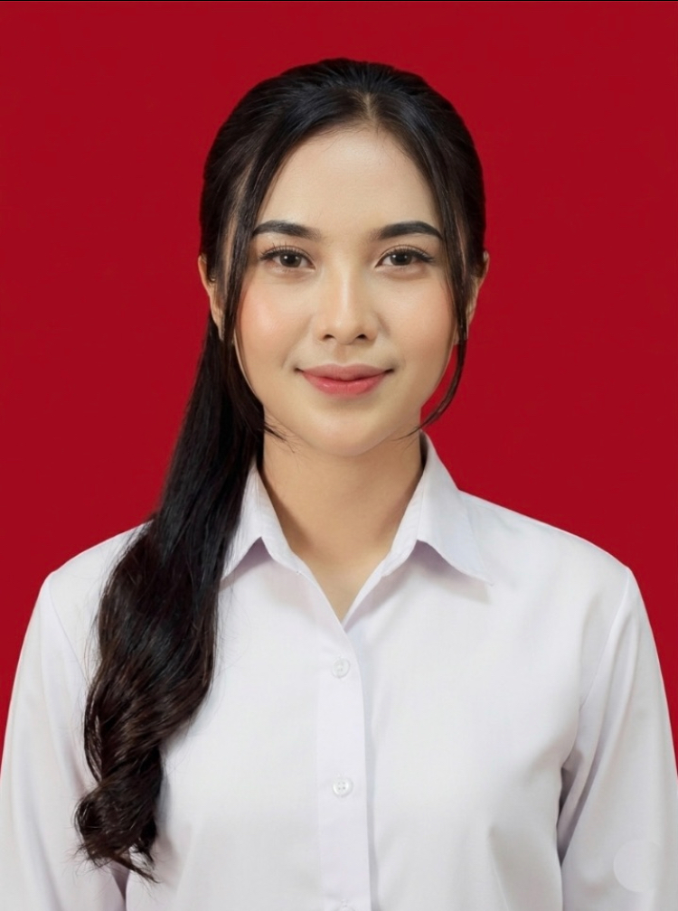

S1 Sistem Informasi | Multidisciplinary Creator | Professional Hospitality

Nama lengkap saya Dinda Oktavia Salsabila. Saya adalah lulusan S1 Sistem Informasi dari STMIK Mardira Bandung (2025) yang memiliki dedikasi tinggi, kepribadian adaptif, serta kemampuan komunikasi yang efektif.
Dengan latar belakang pendidikan di bidang IT, saya memiliki pemahaman mendalam mengenai integrasi teknologi informasi untuk optimasi bisnis. Sejalan dengan itu, saya memiliki ketertarikan besar untuk berkarier di industri perbankan.
Saya percaya bahwa kombinasi antara ketelitian teknis, kemampuan analisis, dan pengalaman saya dalam memberikan pelayanan prima (hospitality) akan menjadi aset berharga dalam mendukung transformasi digital yang dinamis.
Menganalisis pengendalian persediaan barang menggunakan metode teknis ABC untuk optimasi stok.
Menjadi model video promosi/endorse produk cake untuk salah satu Coffeeshop ternama, mengasah kemampuan presentasi produk secara visual.
Membangun brand awareness melalui strategi pembuatan konten kreatif dan edukasi produk.
Menyusun dokumentasi teknis sistem monitoring gunung berapi secara sistematis dan detail.
Berjejaring aktif dalam komunitas teknologi untuk pengembangan sistem informasi terkini.
Memberikan pelayanan pelanggan prima dan memastikan kepuasan konsumen dalam lingkungan cepat.